¿Cómo acceder al sistema?
Para acceder al servidor de impresiones se necesita de un navegador web para acceder, en el cual se escribe en la barra de direcciones la dirección: http://, ver Figura 1.

Figura 1. Barra de direcciones del navegador web, para introducir la dirección y acceder al sistema.
Realizada la acción anterior el sistema muestra una interfaz en la cual se puede ver el historial de impresiones realizadas por fecha, por grupos de usuarios y por grupos de impresoras, ver Figura 2.
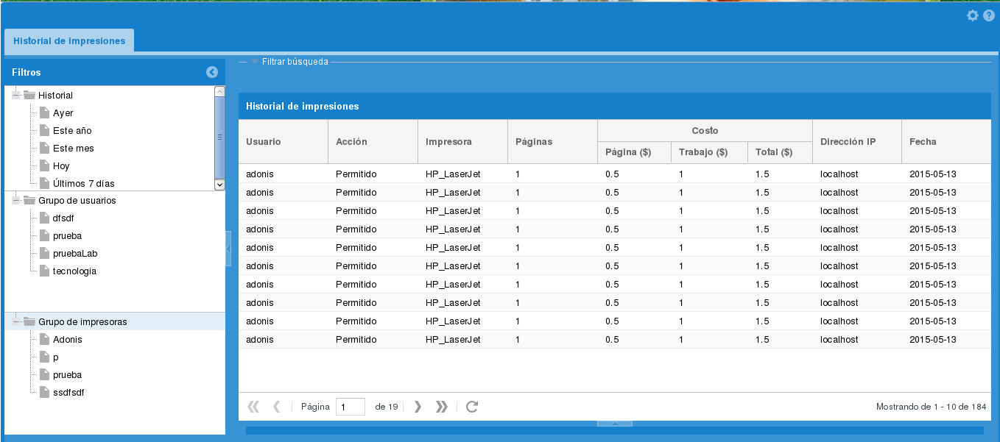
Figura 2. Historial de impresiones.
Para poder realizar otras acciones en el sistema es necesario autenticarse presionando el botón, () ubicado en la esquina superior derecha de la interfaz y se muestra la ventana de autenticación, ver Figura 3.
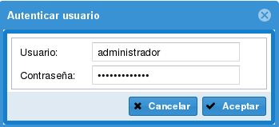
Figura 3. Atenticar usuario.
Se introduce el nombre de usuario y contraseña y se selecciona la opción Aceptar, el sistema comprueba que los datos introducidos sean correctos y muestra una nueva interfaz de Administración, ver Figura 4.
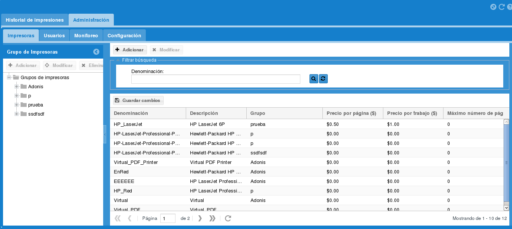
Figura 4. Administrar impresoras.
¿Cómo acceder al sistema?
Para acceder al servidor de impresiones se necesita de un navegador web para acceder, en el cual se escribe en la barra de direcciones la dirección: http://, ver Figura 1.

Figura 1. Barra de direcciones del navegador web, para introducir la dirección y acceder al sistema.
Realizada la acción anterior el sistema muestra una interfaz en la cual se puede ver el historial de impresiones realizadas por fecha, por grupos de usuarios y por grupos de impresoras, ver Figura 2.
Figura 2. Historial de impresiones.
Para poder realizar otras acciones en el sistema es necesario autenticarse presionando el botón, () ubicado en la esquina superior derecha de la interfaz y se muestra la ventana de autenticación, ver Figura 3.
Figura 3. Atenticar usuario.
Se introduce el nombre de usuario y contraseña y se selecciona la opción Aceptar, el sistema comprueba que los datos introducidos sean correctos y muestra una nueva interfaz de Administración, ver Figura 4.
Figura 4. Administrar impresoras.
Descripción de los procesos
El sistema cuenta con varias funcionalidades que la conforman, entre las que se encuentran:Administrar impresoras, Administrar usuarios, monitoreo y Configuración.
Administrar impresoras
Grupo de impresoras
Inicialmente se muestra la interfaz de la administración de las impresoras en la cual se pueden gestionar los grupos de impresoras. En el panel izquierdo aparecen los botones de Adicionar, Modificar y Eliminar.
Adicionar grupo de impresoras
Para adicionar un grupo de impresoras se presiona el botón Adicionar y se muestra la interfaz Adicionar grupo de impresora, ver Figura 5.
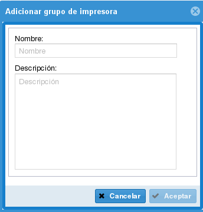
Figura 5. Adicionar grupo d eimpresora.
Se introducen los datos del grupo de impresora y se presiona el botón Aceptar para guardar los datos y cerrar la interfaz. Se muestra un mensaje de información, ver Figura 6.
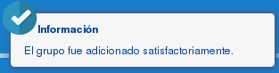
Figura 6. Mensaje de información.
Modificar grupo de impresoras
Para modificar un grupo se selecciona el mismo y se presiona el botón Modificar y se muestra la interfaz Modificar grupo de impresora, ver Figura 7.
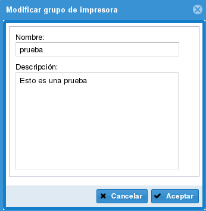
Figura 6. Modificar grupo d eimpresora.
Se modifican los datos y se presiona el botón Aceptar para guardar los cambios realizados y cerrar la interfaz. Se muestra un mensaje de información, ver Figura 8.
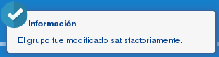
Figura 7. Mensaje de información
Eliminar grupo de impresoras
Para eliminar un grupo de impresora se selecciona el mismo y se presiona el botón Eliminar y se muestra un mensaje de confirmación, ver Figura 9.
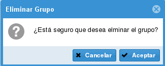
Figura 9. Mensaje de confirmación.
Se presiona el botón Aceptar y se elimina el grupo seleccionado mostrando un mensaje de información, ver Figura 10.

Figura 10. Mensaje de información.
Si se quiere eliminar una impresora se selecciona la misma en el grupo al que pertenece y se presiona el botón Eliminar, mostrándose un mensaje de confirmación, ver Figura 11. Se presiona el botón Aceptar y se elimina la impresora seleccionada.
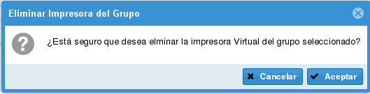Figura 11. Mensaje de confirmación.
Configurar impresoras
En el panel derecho de la interfaz para administrar las impresoras se gestionan las mismas. Aquí se pueden Adicionar y Modificar.
Adicionar impresoras
Para adicionar una impresora se presiona el botón Adicionar el cual tiene un tooltip con el texto Adicionar impresora(Alt+I). Se muestra la interfaz Añadir impresora, ver Figura 12.
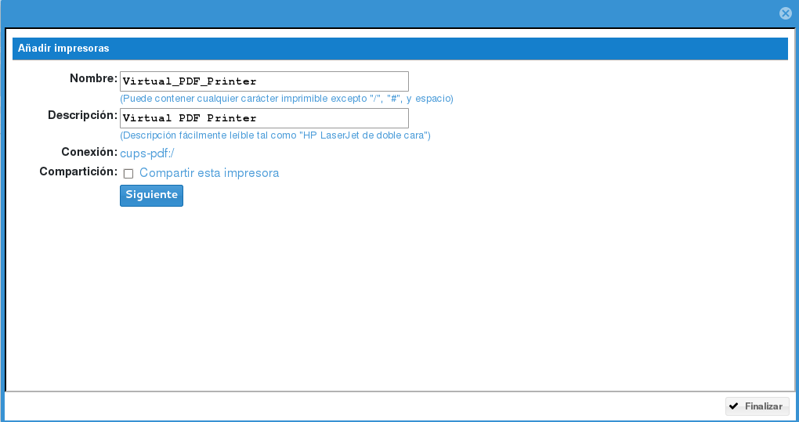
Figura 12. Anadir impresoras.
En la interfaz anterior se selecciona una impresora y se presiona el botón Siguiente, mostrándose una nueva interfaz, ver Figura 13.
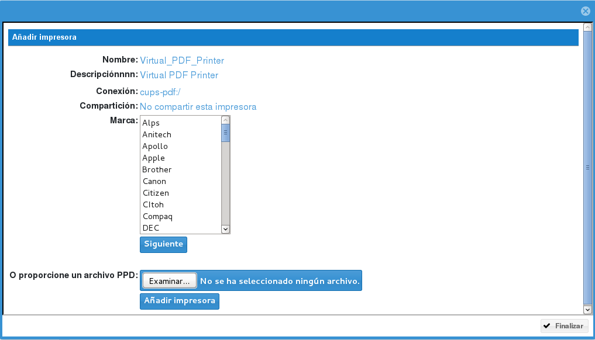Figura 13. Anadir impresoras.
En la interfaz anterior se introduce el nombre de la impresora y la descripción de la misma, se selecciona si va a estar compartida la impresora y luego se presiona el botón Siguiente, mostrándose la nueva interfaz, ver Figura 14.
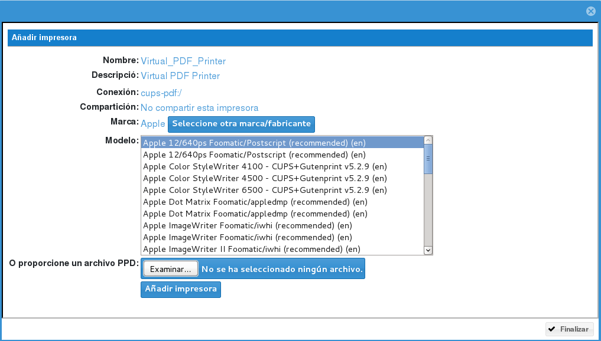Figura 14. Anadir impresoras.
En la interfaz anterior se selecciona la marca de la impresora y se presiona el botón Siguiente y se muestra la nueva interfaz, ver Figura 15. En caso de que no aparezca la marca en el listado y se tenga el archivo PPD, se busca el mismo a través del botón Examinar y luego se presiona el botón Añadir impresora, se añade la impresora y se muestra la nueva interfaz, ver Figura 16.
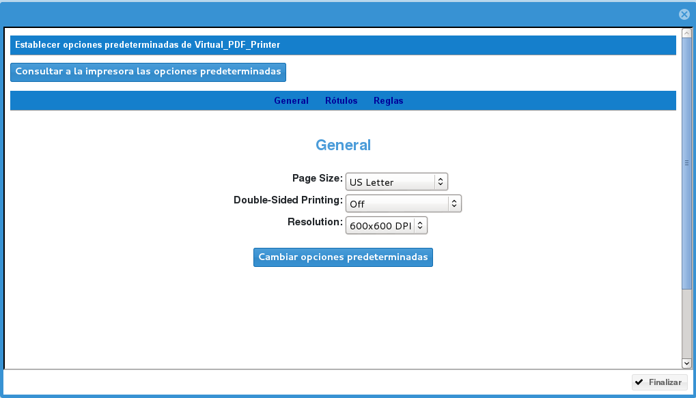
Figura 15. Anadir impresoras.
En la interfaz anterior se selecciona el modelo de la impresora del listado de modelos o se cargar un archivo PPD y se presiona el botón Añadir impresora, mostrándose una nueva interfaz, ver Figura 16.
Figura 16. Anadir impresoras.
En la interfaz anterior se muestran los datos generales de la impresora añadida, se pueden cambiar las opciones predeterminadas y consultar las opciones predeterminadas, por último se presiona el botón Finalizar, se guardan los datos y se cierra la interfaz.
La nueva impresora aparece en el listado de impresoras que se muestra en un grid el cual cuenta con algunos campos editables como es el caso de los campos Descripción, Precio por página ($), Precio por trabajo ($) y Máximo número de pág. Estos datos se pueden modificar en el grid y luego presionar el botón Guardar para registrar los cambios realizados. Si se quiere buscar una impresora específica se introduce la denominación de la misma en el panel de búsqueda y se presiona el botón Buscar (). Para deshacer la búsqueda se presiona el botón Limpiar ().
Administrar usuarios
Grupo de usuarios
En la interfaz de Administración se selecciona la pestaña Usuarios, ver Figura 17, en la cual se pueden gestionar los usuarios y los grupos de usuarios. En el panel izquierdo aparecen los botones de Adicionar, Modificar y Eliminar grupos de usuarios.

Figura 17. Administrar usuarios
Adicionar grupo de usuarios
Para adicionar un grupo de usuarios se presiona el botón Adicionar y se muestra la interfaz Adicionar grupo de usuarios, ver Figura 18.
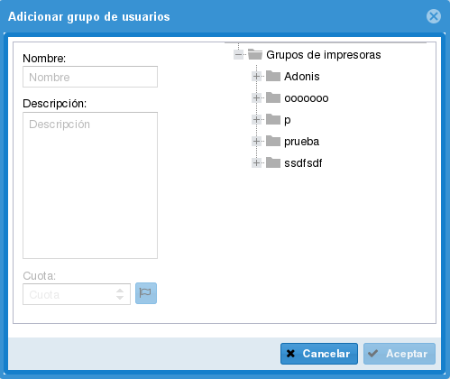
Figura 18. Adicioinar grupo de usuarios.
Se introducen los datos del grupo de usuarios y se presiona el botón Aceptar para guardar los datos y cerrar la interfaz. Se muestra un mensaje de información, ver Figura 19.

Figura 19. Mensaje de información.
Modificar grupo de usuarios
Para modificar un grupo se selecciona el mismo y se presiona el botón Modificar y se muestra la interfaz Modificar grupo de usuarios, ver Figura 20.
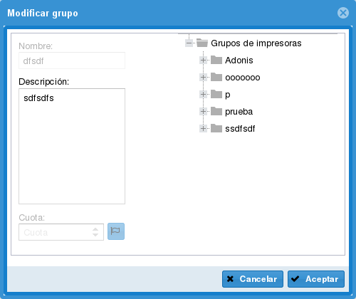
Figura 20. Modificar grupo.
Se modifican los datos y se presiona el botón Aceptar para guardar los cambios realizados y cerrar la interfaz. Se muestra un mensaje de información, ver Figura 21.
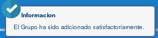
Figura 21. Mensaje de información.
Eliminar grupo de usuarios
Para eliminar un grupo de usuarios se selecciona el mismo y se presiona el botón Eliminar y se muestra un mensaje de confirmación, ver Figura 22.
Figura 22. Mensaje de confirmación.
Se presiona el botón Aceptar y se elimina el grupo seleccionado mostrando un mensaje de información, ver Figura 23.
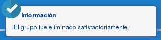
Figura 23. Mensaje de información.
Si se quiere eliminar un usuario del grupo se selecciona el mismo en el grupo al que pertenece y se presiona el botón Eliminar, mostrándose un mensaje de confirmación, ver Figura 24.
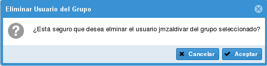
Figura 24. Mensaje de confirmación.
Se presiona el botón Aceptar y se elimina el usuario del grupo seleccionado y queda disponible para ser asignado a otro grupo de usuarios.
Configurar usuarios
En el panel derecho de la interfaz para administrar los usuarios se gestionan los mismos. Aquí se pueden Adicionar y Modificar los usuarios al sistema.
Adicionar usuario
Para adicionar un usuario se presiona el botón Adicionar el cual tiene un tooltip con el texto Adicionar usuario(Alt+G). Se muestra la interfaz Adicionar usuario, ver Figura 25.
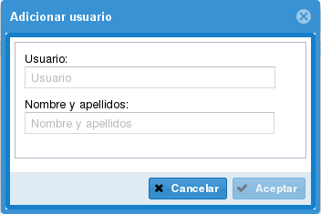
Figura 25. Adicionar usuario.
Se introducen los datos del usuario y se presiona el botón Aceptar para guardar los datos y cerrar la interfaz, mostrándose un mensaje de información, ver Figura 26.
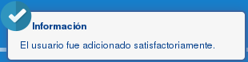
Figura 26. Mensaje de información.
Modificar usuario
En el listado de usuarios se muestra en un grid editable a través del cual se pueden modificar los valores de los campos haciendo doble clic en ellos e introduciendo los nuevos valores, luego se presiona el botón guardar para registrar los cambios registrados.
Eliminar usuarios
Para eliminar un usuario del sistema se selecciona el mismo en el listado de usuarios y se presiona el botón Eliminar y se muestra un mensaje de confirmación, ver Figura 27.
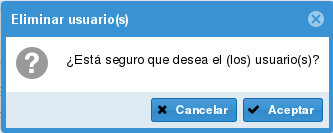
Figura 27. Mensaje de confirmación.
Si se quiere buscar un usuario específico se introduce el valor del mismo en el campo Usuario del panel de búsqueda y se presiona el botón Buscar (). Para deshacer la búsqueda se presiona el botón Limpiar ().
Monitoreo
En la pestaña Monitoreo se muestra la cola de impresiones de los trabajos por impresoras, mostrando de estos el tamaño, las páginas y el estado de cada trabajo, ver Figura 28.
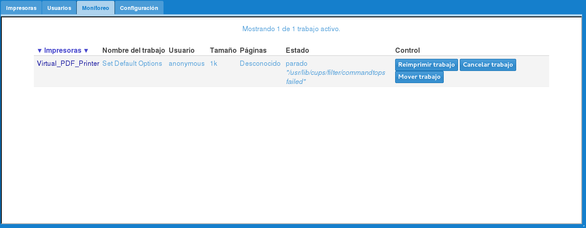
Figura 28. Monitoreo.
Configuración
En la pestaña Configuración se gestionan las direcciones IP que tienen acceso a las impresoras, ver Figura 29. Si se quiere dar permiso a direcciones específicas se presiona el botón Adicionar, y se introducen las direcciones IP ver Figura 30, si se quiere dar permiso a todas las direcciones IP se selecciona el checkbox Permitir todas.
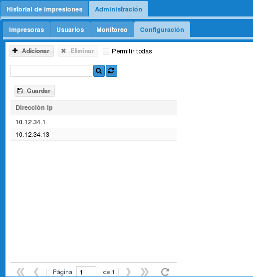
Figura 29. Configuración.
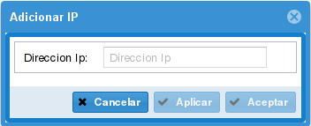
Figura 30. Adicionar IP.